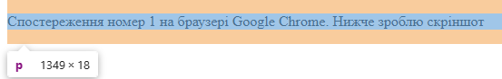
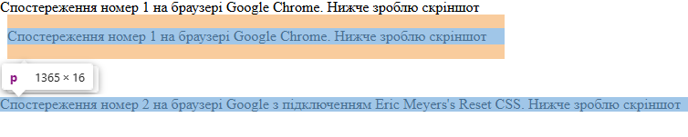

Спостереження номер 1 на браузері Google Chrome. Нижче зроблю скріншот
Спостереження номер 2 на браузері Google з підключенням Eric Meyers's Reset CSS. Нижче зроблю скріншот
Мій висновок за використання Reset.CSS - зникають повністю всі стилі браузера: маржини та падінги!